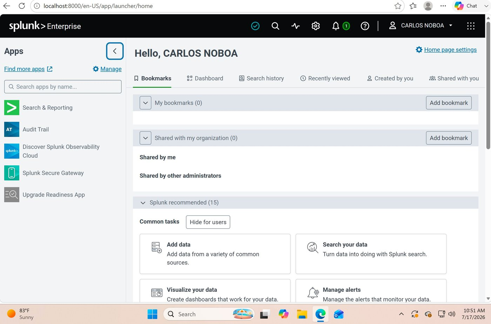
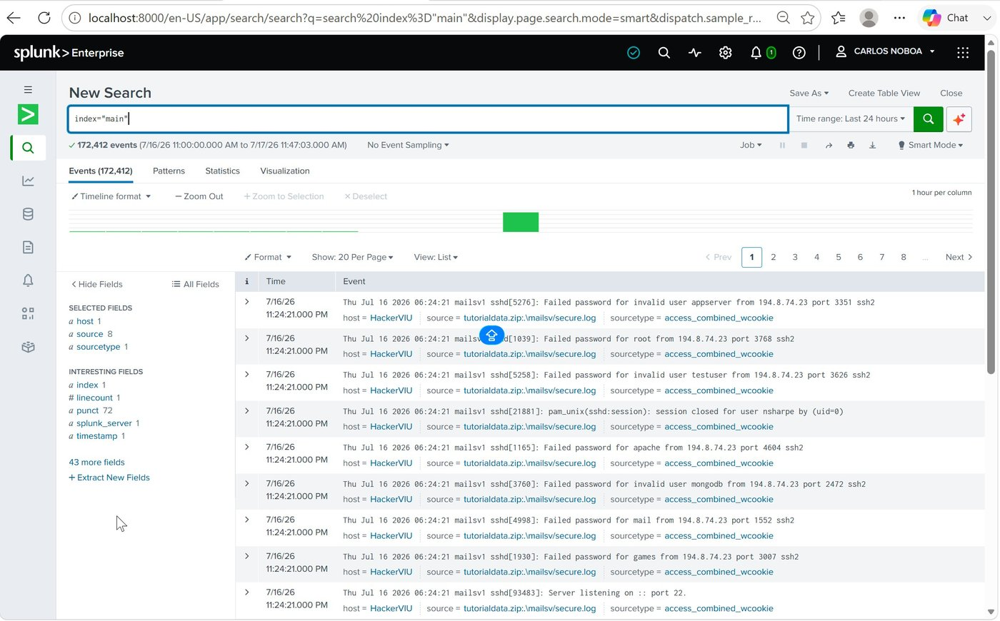
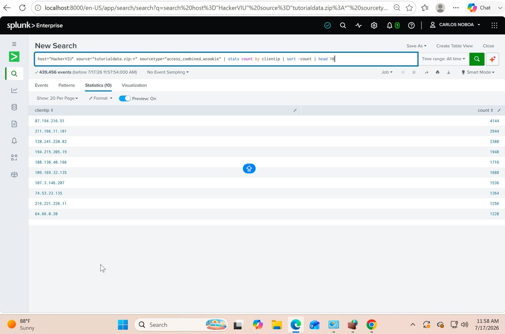
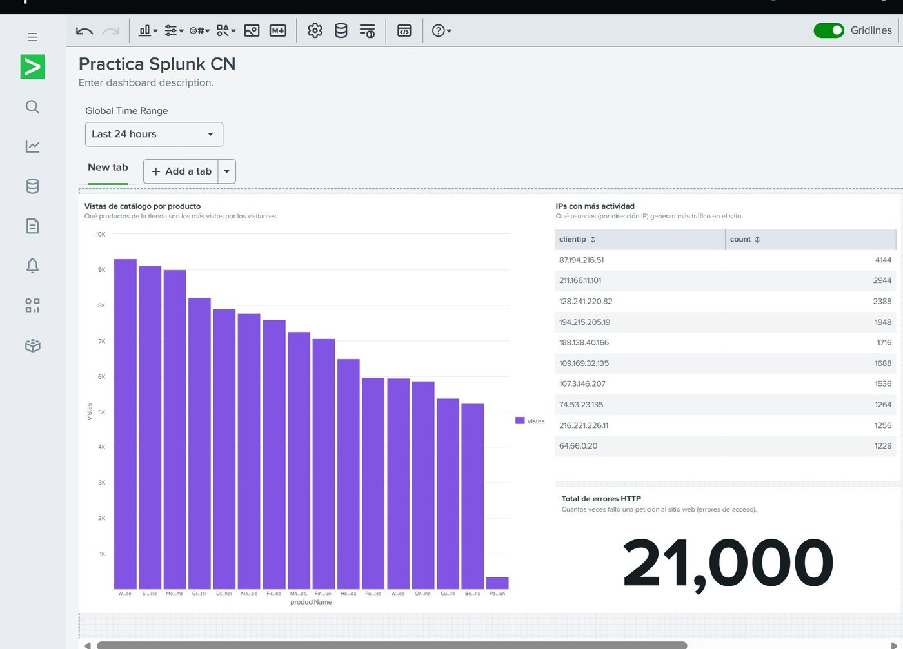

El punto de partida
Por qué una empresa necesita algo más que un archivo de registros
Cualquier sitio web o sistema informático va dejando un rastro constante de lo que ocurre: quién entró, qué páginas visitó, qué falló. Ese rastro se acumula en archivos de texto conocidos como "logs" —y en un negocio real, esos archivos crecen a un ritmo de miles de líneas por minuto. Leerlos uno por uno, a mano, es sencillamente inviable.
Este ejercicio instaló Splunk, una herramienta que hace justamente eso a escala: recoge todo ese rastro, permite hacerle preguntas en un lenguaje parecido al humano, y convierte la respuesta en un panel visual que un supervisor puede revisar en segundos, no en horas.

Paso 1
Cargar el rastro completo de la tienda
Se cargaron los registros de una tienda de videojuegos ficticia usada como ejemplo de práctica —accesos web, intentos de conexión y un listado de precios— para que la herramienta los indexara y quedaran listos para consultarse. En total, entraron 172.412 líneas de rastro solo en la primera carga, entre ellas una tanda de intentos de acceso fallidos por SSH que la propia herramienta capturó igual que cualquier otro evento.

Para qué sirve esto en una empresa
Centralizar el rastro de todos los sistemas en un solo lugar es el primer paso de cualquier estrategia de monitorización seria: sin eso, cada incidente obliga a revisar servidor por servidor, archivo por archivo.
Paso 2
Hacerle preguntas directas a más de 400.000 registros
Con los datos ya cargados, se le hicieron a la herramienta cuatro preguntas concretas: ¿cuántas peticiones fallaron?, ¿qué direcciones de origen generan más tráfico?, ¿qué productos se compran más?, ¿qué productos se miran más? Cada pregunta se escribe en una sola línea de texto y la respuesta llega en segundos, ya ordenada y contada, sobre un total de 439.456 registros.

Para qué sirve esto en una empresa
Esa misma pregunta, hecha sobre el tráfico real de una empresa, es exactamente cómo se detecta un origen sospechoso de tráfico automatizado, un intento de fuerza bruta o un posible abuso, sin tener que revisar el tráfico línea por línea.
Paso 3
Convertir cuatro respuestas sueltas en un solo panel
Las preguntas y sus respuestas, por separado, siguen siendo información dispersa. El último paso combinó tres de ellas —el total de errores de acceso, el ranking de direcciones más activas y las vistas por producto— en un único panel visual, pensado para leerse en el primer vistazo de un turno de vigilancia, sin ejecutar ninguna consulta nueva.

Para qué sirve esto en una empresa
Un panel como este es la diferencia entre enterarse de un problema porque un cliente se queja, y detectarlo minutos después de que empiece a ocurrir. El valor no está en guardar el rastro de la actividad, sino en poder mirarlo de un vistazo y saber si algo merece atención.
En resumen
Por qué esto importa más allá del ejercicio académico
La tienda analizada aquí es ficticia y los datos son de práctica; nada de esto afectó a un sistema real. Pero el procedimiento —centralizar el rastro de la actividad, hacerle preguntas concretas y convertir las respuestas en un panel visual— es exactamente el que sigue cualquier equipo de seguridad o de operaciones para vigilar sistemas reales. La idea de fondo no es acumular registros; es poder mirar un panel y, en segundos, saber si algo se sale de lo esperado: un pico de errores, una dirección que concentra tráfico, un producto con un comportamiento inusual.
439.456 eventos indexados · 21.000 errores de acceso detectados · panel de tres indicadores generado a partir de ellos